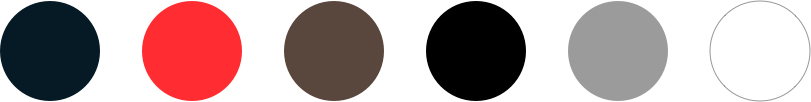

Popmenu Client Redesign
How can I re-design Wimpy’s Restaurants site to create a more functional, modern, and effective nautical theme?
The redesign was a 2 hour design challenge where I was the sole designer. I created hi-fidelity mockups including several design iterations to submit to the lead web designer at Popmenu.
🎯 Client direction
Popmenu’s client Wimpy’s Restaurant is not happy with his site. He does not want it as bright and vibrant and does not like how cartoony it is. They want a more modern look with the use of a darker color pallete and the nautical fisherman theme.

👩🏻🏫️ What was my design process?
During this design challenge, my goal was to consider the client’s needs and requests to select colors, fonts and stock photography for use on their new Popmenu site.
I focused on creating a simple mockup for the home page, using the general Popmenu template of a large hero image, followed by some brief text, a photo gallery, a menu, and location information.
With consideration to time, I started with a brief research into a nautical themed color palette and font I implemented the ideation phase to create an
🤔 How did I make the design decision?
Selecting a color palette was challenging but I knew I had to stick to a color on the darker side of the palette. Blue isn’t a common color in restaurants, because it does not evoke the feeling of hunger. The beauty of the design process is that rules can be broken with exceptional designs. Blue does elevate the idea of a sea theme in seafood restaurants.
"The beauty of the design process is that rules can be broken with exceptional designs."
One way blues have worked for similar restaurants, is in the seafood or nautically-themed restaurants who have been very successful in using the darker blue. I balanced the blue with a use of red/orange color on the CTA button to represent the food industry to create a user appetite.
Open Sans, Lato and Roboto are the top 3 google fonts used on restaurant websites. These are all very popular fonts. I decided to go with Lato for the body font, to give it a more modern appeal. I chose a more nautical themed font for the restaurant header. The closest I found was Georgia. According to the research, Georgia is a serif font that appears elegant and also legible in print. Georgia goes very well with Lato and is used mostly as a header with lato as the body text.
⏲️ Times up - Design tools down!
Yikes Some questions were raised :)
- Does the menu belong on the landing page?
- Is the restaurant fine dining or casual?
- Is the market and restaurant in the same location or seperate?